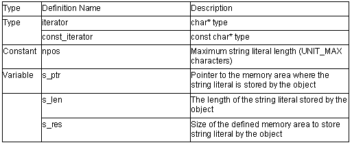

string Class

1. string::string(void)
The settings are as follows:
npos=0;
s_ptr = 0;
s_len = 0;
s_res = 0;
2. string::string( const string& str, size_t pos=0, size_t n=npos)
Copies str. Note that s_len will be the smaller value of n and s_len.
3. string::string( const char* str, size_t n)
The settings are as follows:
s_ptr = str;
s_len = n;
s_res = n+1;
4. string::string( const char* str)
The settings are as follows:
s_ptr = str;
String literal length of s_len = str;
String literal length +1 of s_res =str;
5. string::string( size_t n, char c)
The settings are as follows:
s_ptr=string literal of n number of characters c
s_len = n;
s_res = n+1;
6. string::~string()
Destructor of class string.
Deallocates the memory area where the string literal is stored.
7. string& string::operator=( const string& str)
Assigns the str data.
Return value: *this
8. string& sting::operator=( const char* str)
Creates string object from str and assigns the data of str to the string object.
Return value: *this
9. string& string::operator=(char c)
Creates string object from c and assigns the data of c to the string object.
Return value: *this
10. string::iterator string::begin()
string::const_iterator string::begin() const
Calculates the start pointer of the string literal.
Return value: Start pointer of string literal
11. string::iterator sting::end()
string::const_iterator string::end() const
Calculates the end pointer of the string literal.
Return value: End pointer of string literal
12. size_t string::size() const
size_t string::length() const
Calculates the length of the stored string literal.
Return value: String literal length of the stored string literal
13. size_t string::max_size() const
Calculates the size of the defined memory area.
Return value: Size of the defined area
14. void string::resize( size_t n, char c)
Changes the string literal length to n that can be stored.
If n<=size(), replaces a string literal with the original string literal with length n.
If n>size(), replaces a string literal with a string literal that has c added to the end so that the length equal to n.
The length must be n<=max_size.
If n>max_size(), the string literal length must be n=max_size().
15. void string::resize( size_t n)
Changes the string literal length to n that can be stored.
If n<=size(), replaces a string literal with the original string literal with length n.
The length must be n<=max_size.
16. size_t string::capacity() const
Calculates the size of the defined memory area.
Return value: Size of the defined memory area
17. void string::reserve( size_t res_arg = 0)
Re-allocates the memory area.
After reserve(), capacity() will be equal to or larger than the reserve parameter.
When memory area is re-allocated, all references, pointers, and iterator that references the elements of the numeric literal (number sequence, series) become invalid.
18. void string::clear()
Clears the stored string literal.
19. bool string::empty() const
Checks whether the stored string literal length is 0.
Return value: If the length of the stored string literal is 0: true
If the length of the stored string literal is not 0: false
20. const char & string::operator[]( size_t pos) const
char & string::operator[]( size_t pos)
const char & string::at( size_t pos) const
char & string::at(size_t pos)References s_ptr[pos].
Return value: If n< s_len: s_ptr [pos]
If n>= s_len: '\0'
21. string& string::operator+=(const string& str)
Adds the string literal stored by str.
Return value: *this
22. string& string::operator+=(const char* str)
Creates string object from str and adds the string literal to the object.
Return value: *this
23. string& string::operator+=(char c)
Creates string object from c and adds the string literal to the object.
Return value: *this
24. string& string::append(const string& str)
string& string::append(const char* str)Adds str string literal to the object.
Return value: *this
25. string& string::append(const string& str, size_t pos, size_t n);
Adds n number of characters to the str string literal at the object position pos.
Return value: *this
26. string& string::append(const char* str, size_t n)
Adds n number of characters to the str string literal.
Return value: *this
27. string& string::append(size_t n, char c)
Adds n number of characters c.
Return value: *this
28. string& string::assign(const string& str)
string& string::assign(const char* str)Assigns str string literal.
Return value: *this
29. string& string::assign(const string& str, size_t pos, size_t n)
Assigns n number of characters of str string literal to position pos.
Return value: *this
30. string& string::assign(const char* str, size_t n)
Assigns n number of characters str to string literal str.
Return value: *this
31. string& string::assign(size_t n, char c)
Assigns n number of characters c.
Return value: *this
32. string& string::insert(size_t pos1, const string& str)
Inserts str string literal to position pos1.
Return value: *this
33. string& string::insert(size_t pos1, const string& str, size_t pos2, size_t n)
Inserts n number of characters to position pos1 from str string literal position pos2. Inserts n number of characters to position pos1 from str string literal position pos2.
Return value: *this
34. string& string::insert(size_t pos, const char* str, size_t n)
Inserts n number of characters of str string literal s to position pos.
Return value: *this
35. string& string::insert(size_t pos, const char* str)
Inserts string literal str to position pos.
Return value: *this
36. string& string::insert(size_t pos, size_t n, char c)
Inserts a string literal of n number of characters c to position pos.
Return value: *this
37. string::iterator string::insert(iterator p, char c=char())
Inserts characters c at the head of the string literal specified by p.
Return value: *this
38. void string::insert(iterator p, size_t n, char c)
Inserts n number of characters c before the characters specified by p.
Return value: *this
39. string& string::erase(size_t pos=0, size_t n=npos)
Deletes n number of characters from position pos.
Return value: *this
40. iterator string::erase(iterator position)
Deletes the characters referenced by position.
Return value: If the next iterator of deletion elements exists: The next iterator of deleted elements
If the next iterator of deletion elements do not exist: \0
41. iterator string::erase(iterator first, iterator last)
Deletes the characters in range [first, last].
Return value: If an iterator exists after last: Iterator after last
If an iterator does not exists after last: \0
42. string& string::replace(size_t pos1, size_t n1, const string& str)
string& string::replace(size_t pos1, size_t n1, const char* str)
Replaces string literal of n1 characters from position pos1 with the str string literal.
Return value: *this
43. string& string::replace(size_t pos, size_t n1, const string& str, size_t pos2, size_t n2)
Replaces string literal of n1 characters from position pos1 with string literal of n2 characters from str position pos2.
Return value: *this
44. string& string::replace(size_t pos, size_t n1, const char* str, size_t n2)
Replaces string literal of n1 characters from position pos1 with the str string literal of n2 characters
Return value: *this
45. string& string::replace(size_t pos, size_t n1, size_t n2, char c)
Replaces string literal of n1 characters from position pos1 with n2 characters c.
Return value: *this
46. string& string::replace(iterator i1, iterator i2, const string& str)
string& string::replace(iterator i1, iterator i2, const char* str)
Replaces string literal i1 to i2 with the str string literal.
Return value: *this
47. string& string::replace(iterator i1, iterator i2, const char* str, size_t n)
Replaces string literal i1 to i2 with n number of characters of str string literal
Return value: *this
48. string& string::replace(iterator i1, iterator i2, size_t n, char c)
Replaces characters from position i1 to i2 with n number of characters c.
Return value: *this
49. size_t string::copy(char* str, size_t n, size_t pos=0) const
Copies n characters of string literal str to position pos.
Return value: rlen
50. void string::swap(string& str)
Swaps with str string literal.
51. const char* string::c_str() const
const char* string::data() const
References the pointer to the area where the string literal is stored.
Return value: s_ptr
52. size_t sting::find(const string& str, size_t pos=0) const
size_t string::find(const char* str, size_t pos=0) const
Finds the position where the string literal same as the str string literal first appears after position pos.
Return value: Offset of string literal
53. size_t string::find(const char* str, size_t pos, size_t n) const
Finds the position where the string literal same as the n characters of str first appears after position pos.
Return value: Offset of string literal
54. size_t string::find(char c, size_t pos=0) const
Finds the location where characters c first appear after position pos.
Return value: Offset of string literal
55. size_t string::rfind(const string& str, size_t pos=npos) const
size_t string::rfind(char *str, size_t pos=npos) const
Finds the position where a string literal same as the str string literal appears most recent before position pos.
Return value: Offset of string literal
56. size_t string::rfind(const char* str,size_t pos,size_t n) const
Finds the position where the string literal same as n characters of str appears most recent before position pos.
Finds the position where the string literal same as n characters of str appears most recent before position pos.
Return value: Offset of string literal
57. size_t string::rfind(char c,size_t pos=npos) const
Finds the position where characters c first appear most recent before position pos.
Return value: Offset of string literal
58. size_t string::find_first_of(const string& str, size_t pos=0) const
size_t string::find_first_of(const char* str, size_t pos=0) const
Finds the position where any character included in the string literal str first appears after position pos.
Return value: Offset of string literal
59. size_t string::find_first_of(const char* str, size_t pos, size_t n) const
Finds the position where any character included in n characters of string literal str first appear after position pos.
Return value: Offset of string literal
60. size_t string::find_first_of(char c, size_t pos=0) const
Finds the position where characters c first appear after position pos.
Return value: Offset of string literal
61. size_t string::find_last_of(const string& str, size_t pos=npos) const
size_t string::find_last_of(const char* str, size_t pos=npos) const
Finds the position where any character included in the string literal str appears most recent before position pos.
Return value: Offset of string literal
62. size_t string::find_last_of(const char* str, size_t pos, size_t n) const
Finds the position where any character included in the n characters of string literal str appears most recent before position pos.
Return value: Offset of string literal
63. size_t string::find_last_of(char c, size_t pos=npos) const
Finds the position where characters c appear most recent before position pos.
Return value: Offset of string literal
64. size_t string::find_first_not_of(const string& str, size_t pos=0) const
size_t string::find_first_not_of(const char* str, size_t pos=0) const
Finds the position where characters different from any character included in the str first appears after position pos.
Return value: Offset of string literal
65. size_t string::find_first_not_of(const char* str, size_t pos, size_t n) const
Finds the position where characters different from any character from the start of str for n characters first appear after position pos.
Return value: Offset of string literal
66. size_t string::find_first_not_of(char c, size_t pos=0) const
Finds the position where characters different from characters c first appear after position pos
Return value: Offset of string literal
67. size_t string::find_last_not_of(const string& str, size_t pos=npos) const
size_t string::find_last_not_of(const char* str, size_t pos=npos) const
Finds the position where characters different from any character included in the str appears most recent before position pos.
Return value: Offset of string literal
68. size_t string::find_last_not_of(const char* str, size_t pos, size_t n) const
Finds the position where characters different from any character from the start of str to n characters appear most recent before position pos.
Return value: Offset of string literal
69. size_t string::find_last_not_of(char c, size_t pos=npos) const
Finds the location where characters different from characters c appear most recent before position pos.
Return value: Offset of string literal
70. string string::substr(size_t pos=0, size_t n=npos) const
Creates an object with a string literal range [pos,n] for the stored string literal.
Return value: Object address with string literal range [pos,n]
71. int string::compare(const string& str) const
Compares string literal with str string literal.
Return value: If the string literals are the same: 0
If the string literals are different: 1 when this->s_len>str.s_len, -1
when this->s_len < str.s_len
72. int string::compare(size_t pos1, size_t n1, const string& str) const
Compares a string literal of n1 characters from position pos1 with str.
Return value: If the string literals are the same: 0
If the string literals are different: 1 when this->s_len>str.s_len, -1
when this->s_len < str.s_len
73. int string::compare(size_t pos1, size_t n1, const string& str, size_t pos2, size_t n2) const
Compares string literal of n1 characters from position pos1 with the string literal of n2 characters from str position pos2.
Return value: If the string literals are the same: 0
If the string literals are different: 1 when this->s_len>str.s_len, -1
when this->s_len < str.s_len
74. int string::compare(const char* str) const
Compares with str.
Return value: If the string literals are the same: 0
If the string literals are different: 1 when this->s_len>str.s_len, -1
when this->s_len < str.s_len
75. int string::compare(size_t pos1, size_t n1, const char* str, size_t n2=npos) const
Compares string literal of n1 characters from position pos1 with sn2 characters of str.
Return value: If the string literals are the same: 0
If the string literals are different: 1 when this->s_len>str.s_len, -1
when this->s_len < str.s_len